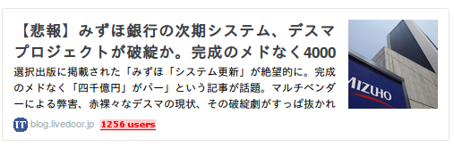
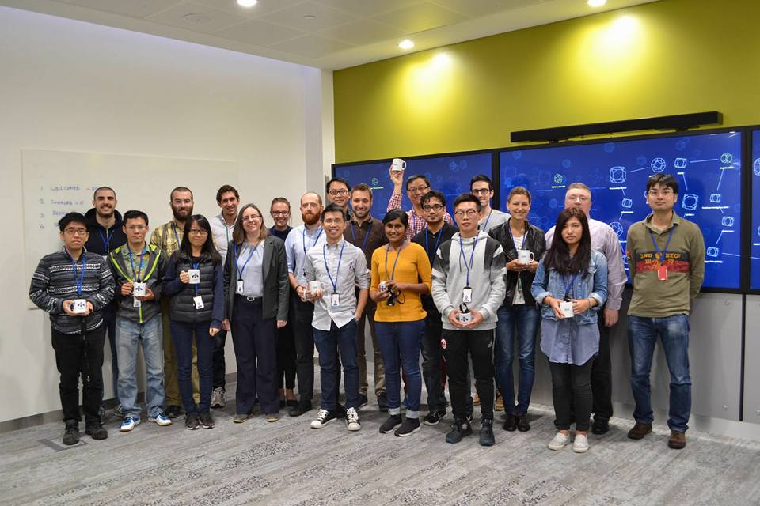
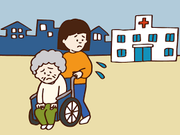
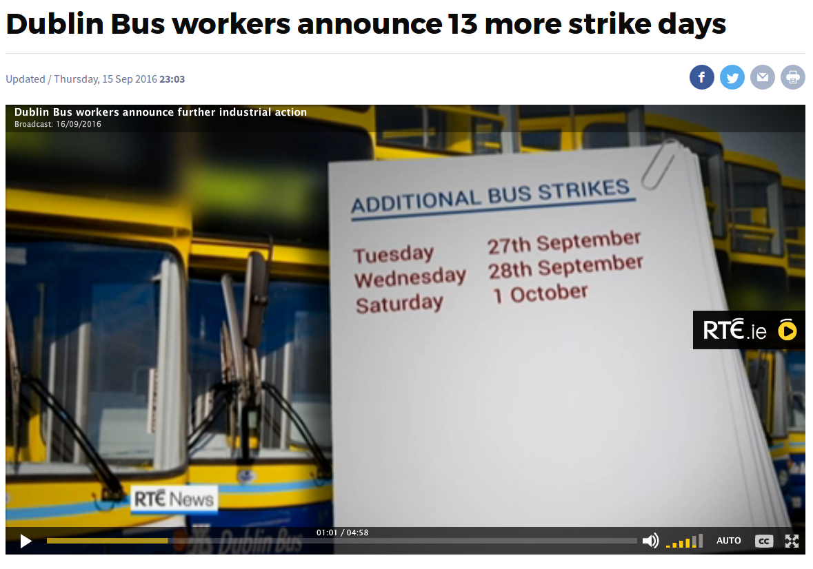
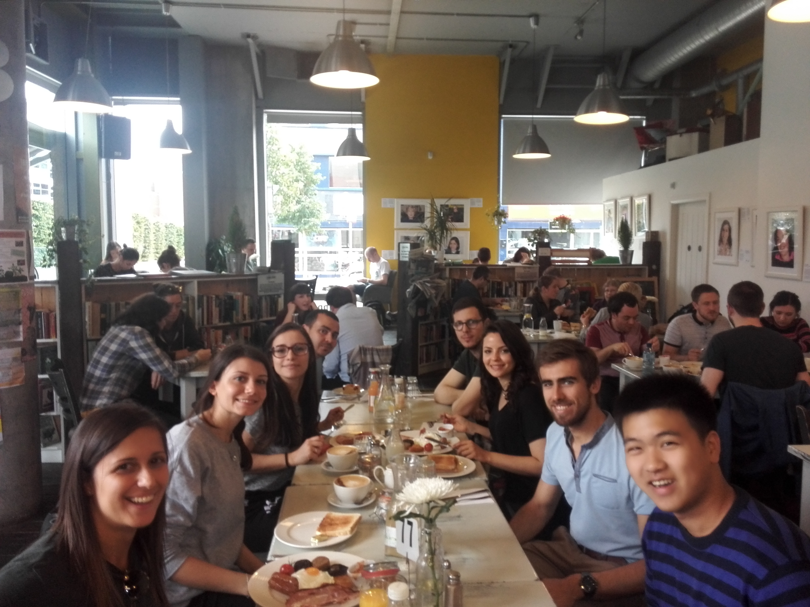
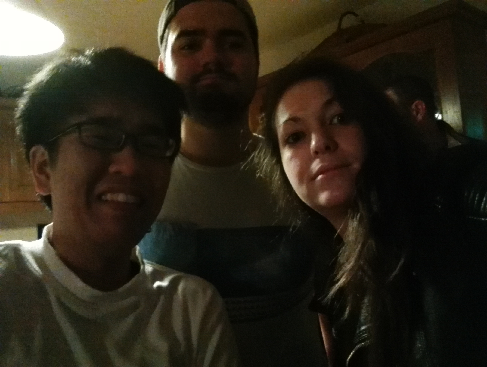
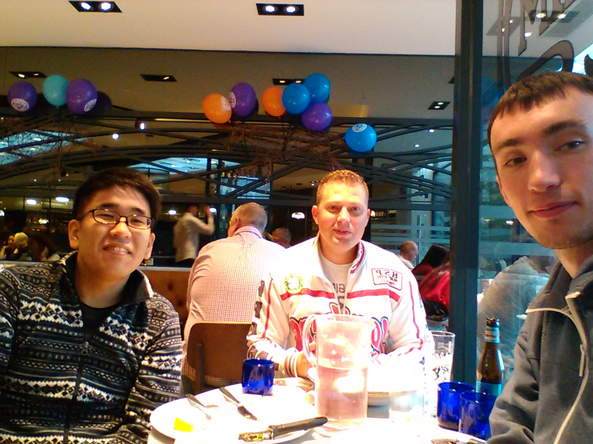

QE プレゼンテーション
Masataro Asai (1st yr Doctoral Student)
分野: 人工知能 推論・探索
専門: 高速プランニングアルゴリズムの開発
Congrats, AlphaGo!


My name is Masataro Asai, in this presentation, as other people do, Id like to give a brief introduction to my research field and what I do.
1 Deep Neural Networks
とてもはやっている

1.1 Deep Neural Networks
とてもはやっている
ベクトル (データ) と 行列W (重み) の掛け算

1.2 Deep Neural Networks
とてもはやっている
ベクトル (データ) と 行列W (重み) の掛け算
→ 出力の誤差=微分を使ってWを更新 → 学習完了

1.3 認知タスクで人間に匹敵する精度

1.4 認知タスクで人間に匹敵する精度

1.5 ニューラルネットの役割
「直感的な」問題を解く 関数 を学習すること
- 求めるべき関数 \(y^*=f^*(x)\)
タスク 入力x 出力y 画像分類 画像 ラベル(車、ネコ、猿・・・) 翻訳 文章(日) 文章(英) 未来予測 フレーム列 次のフレーム - NNが表す関数 \(y=f(x)\)
- 学習 ≡ 誤差 \(||y-y^*||\) を最小化する最適化問題
1.6 NNは複雑な問題を魔法のように解くことが出来る
なぜなら
- 人間は賢くてニューロンで動く し、
- ニューロンある = 賢さの証明 だし、
- 賢ければ何でも出来て当然 だし、
- 将来はシンギュラリティに溢れてて当然。
- …
- ハァ?
1.7

1.8 NNは複雑な問題を魔法のように解くことができる?
- 出来る派の意見:
- 人間は賢くてニューロンで動く
- ニューロン = 賢い
- 賢い機械はスゴイからニューロンだ
- 脳科学でシンギュラっちゃうぜ！
※ 画像はイメージ

- 出来ない派の意見:
- プラナリアも神経系を持つが賢い??
- Is humanity so smart?
- Not necessarily↓
※ 画像はイメージ


1.9 No Silver Bullet: NNで複雑な問題を魔法のように解くことはできない・・・と思われる3
- 出来ない派のもう少し真面目な反論2:
- 認知タスクと比べ、論理思考タスクは人間にも難しい
- 人間の物体認識: 1秒以下
- 大学入試数学の証明問題: 25分
- 明らかに 難しさの質に差がある
- 難しさの質というのはどうやって測る?
- 理論的解析: 計算量理論 (NP困難とか)
- 認知タスクと比べ、論理思考タスクは人間にも難しい
2 高度に知的な機械を作るには → DeepLearning + 論理と推論
ディープラーニングのみ
↓
虫程度の知能を持った
反射的な機械
vs
DL + 論理、推論、思考
↓
目標を達成するために
論理で戦略を練る機械

3 誰?


And let me introduce these robots. The guy in the left is Astro boy.
3.1 誰?

As you know, he is a famous manga superhero invented by Tezuka Osamu in 50s,
3.2 誰?

and he can think, hear, speak, act. he also has emotions.
3.3 誰?

In contrast, the guy in the right is a real robot that is actually in use @ fukuoka prefecture for the rescue purpose.. His name is T-52 Enryu, developped by a Japanese company Temzak. He is huge and powerful – about 4 meters in height and can carry things which is as heavy as 500kg. Well, so, in a sense, he is also a superhero in the real disastrous situation.
3.4 誰?

But does he have feelings or can he think? Can he even move around by his own?
3.5 誰?

No. It requires full human intervention — it is indeed operated by a driver who gets in or by a remote control. It is more like a super-sophisticated shovel car.
4 実際の大規模災害では非実用的 — 操縦士が足りない!


- そのままでは役に立たない!
Now the problem is : It's ok in small accidents but is impractical in the real, massive natural disaster which frequently occurs in Japan. The key resource is human — These special purpose vehicles require human intervention, thus they are useless without trained operators.
4.1 操縦士を増やせない – Human Resource and Training
- ✘ 時間 がかかる
- 訓練に ＞100時間, 必要な時だけ増やす のは不可能
- ✘ ￥￥￥￥ がかかる
- 訓練官、訓練場所、訓練用具
- ✘ 技術は 維持が重要
- 定期的な再訓練、長期的コスト、さらなるマニー
- ✘ 平時は 無駄 な技術
- 普段は意味がない – 無駄なマニー!
In a natural disaster, we need as many experienced operators as possible. However, it is virtually impossible due to several reasons.
First, training takes time. It is impossible to quickly increase the number of operators as needed, at the time of disaster.
Second, the money matters. Training a person costs a lot of money, including: the cost of maintaining a training center, the cost of additional vehicles for training, the cost of training the trainers, wages for trainers, etc.
Third, Skills need to be updated and maintained. You know, how about preparing the large number of operators in advance? No, the society cannot torelate the cost of keep training them. Operators may lose the skills and skills may become outdated.
Finally, in a normal situation, those skills are useless. It forces the society to waste a great amount of extra money.
5 だからこそ: 自動プランナ Automated Planner

研究テーマのプランニングは、ロボットに、人間の助けを借りず、いかに自律して行動させるかを扱います。 これをモデル化したプランニング問題は、具体的な行動の列を求める 組合せ最適化問題です。
プランニング問題のタスクは、 センサーから初期状態とゴールを受け取って、被災者を助ける正しい手順を出力することです。
たとえば、この図では男性が瓦礫に埋まって助けを求めています。 プランニング機能のあるロボットは、コレに対して「男性を助けよ」という大まかな指示を受けます。
6 だからこそ: 自動プランナ Automated Planner

指示の内容には、図のように初期状態とゴール、許可された行動のリストが入っています。 ロボットは、自動プランニングにより、人間の代わりに適切な行動を組み立てて、ゴールを自動で達成します。
7 だからこそ: 自動プランナ Automated Planner

プランニングは汎用な枠組みなので、災害救助以外にも様々な問題に適用することができます。 現実の応用例では「宇宙探査機運行問題」や「企業ネットワーク脆弱性問題」も表現できます。
このように、プランニングは、難しい問題を汎用性を失わずに解くことを目指します。
8 IHS に参加した動機と達成度は?
- 将来の研究、製品、起業に関するアイディアを得る 達成 → 追加達成
- IHS参加によって得たアイディアから1st-tier 査読付き国際学会論文が採択 (昨年度)
- 上記のアイディアの発展 (Invasion Percolation) をIHSでの交流から着想、査読付き国際学会論文が採択 (今年度)
- 訪問診療・在宅医療(2016年度授業) のための計画ソルバの制作 (IBM Research インターンシップ)
- 他分野との交流 達成
- 人文科学特有の考え方? を知った (昨年度)
- ドメインエキスパートとの議論を通じてのプログラム開発 (IBM Research インターンシップ)
- 国際的活動についての知識と感覚を身につける 達成 → より達成
- (IBM Research インターンシップ)
9 活動内容
| 学会発表 | |
|---|---|
| AAAI-16(アリゾナ) 2月 (査読付き国際学会) | 論文採択 (採択率26%),プレゼン,ポスター |
| JSAI-16(北九州) 6月 | プレゼン |
| ICAPS-16(ロンドン) 6月 | プレゼン2本,ポスター |
| IBM Research (アイルランド) 7月-11月 | 研究インターンシップ |
| ヘルスケア産業応用を目的とした | |
| ケアワーカー配置問題ソルバの開発 | |
| AAAI-17(サンフランシスコ) 2月 | プレゼン、ポスター |
| J. Artif. Intel. Res. | ジャーナル論文採択 (採択率12%) |
| ICAPS-17(ピッツバーグ) | 1/8 論文採択 (採択率33%) |
10 IBM Research インターンシップ

10.1 インターンシップ内容: 在宅診療・ケアワーカー運送問題
患者が病院を訪問する形の診療は患者の負担が大きい

10.2 様々なスタートアップ

10.3 ケアワーカーの数が圧倒的に足りない

- → ケアワーカーを最適に配置・運用する必要がある
10.4 公共交通機関が不安定
費用を抑えるためには公共交通機関を用いる必要がある
- 日本と違い、アイルランド、イタリア、フランスなどのバスは 遅れる
- 運転手が道を間違える(実体験)
- 運転手がバス停をよく見てなくて手を上げても無視される(実体験)
- ストライキで週の半分はバスが動いていない(実体験)
- 不良に投石され窓ガラスを割られたバスが運行中止(三台連続)(実体験)

10.5 MWRP ソルバの開発
Multiple Worker Routing Problem としてフォーマルに定式化
MWRP問題がNP困難であることの証明
MWRPを解くソルバの開発
MWRPをより高速に解くために、A*アルゴリズムの改良版 Delayed Expansion A*を開発
10.6 仕事以外にも Airbnb で 様々な人と同居
| 期間 | 場所 | ||
|---|---|---|---|
| 7/26-8/04 | 部屋の片隅のベッド | Venezuera | |
| German | |||
| Taiwan | |||
| -9/4 | 三人部屋二段ベッド上 | Spain | China |
| 9-10人で集団生活 | Italy | Brazil | |
| France | Russia | ||
| Libya | |||
| -10/31 | 個室 | Italy | Croatia |
| 3-4人で集団生活 | France | Estonia |
10.7 ルームメイト (ダブリン市内)

10.8 ルームメイト (ダブリン郊外)

10.9 ルームメイト (ダブリン郊外)

11 AI in Practice Session
AAAI17 の トークセッションの一つ
- 現状のAIの能力はまだまだ限られている
- AI は自力で目的を設定することはできない
- 「人間がゴールを与えることで初めて動く道具」
- 例: AIには「囲碁に勝つ」という目標は備わっていない
- 「超人的な性能を発揮するのは理想的な状況を人間が用意した場合のみ」
- 例: 囲碁 という限られた状況にむけて作られたAI
- バックギャモン、ポーカーでは動かない
- 「人間がゴールを与えることで初めて動く道具」
Rao Kambhampati, Chair of AAAI
11.1 AI Creates Jobs, but Not the Same Type of Jobs
- ✗AIが仕事を奪う
- ✗AI vs 人間
- ○AIを使いこなせる人間 vs 使いこなせない人間
- だから高等教育の価値がますます大きくなる
12 今後
語学 – 今年こそ
博士論文 – あと数本通れば完璧なストーリーの博士論文になるはず
学外プロジェクト – 研究以外のこともしたい